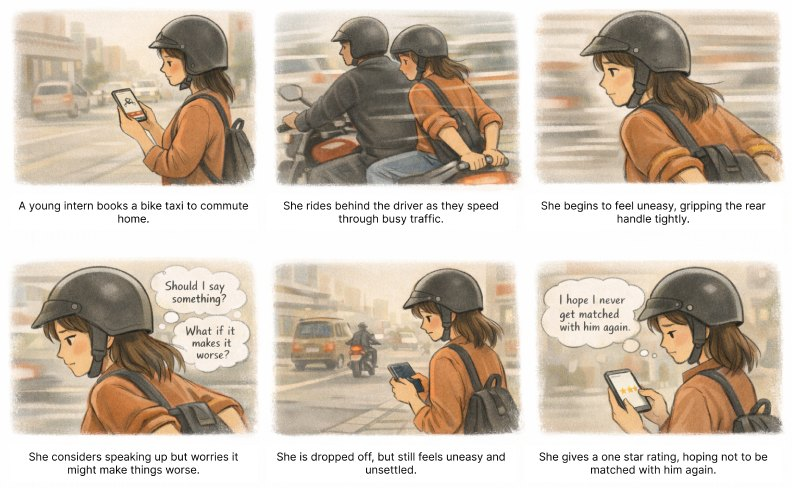

A concept for what a ride-hailing app could do after a one star rating, so the rider knows they were heard.
lightbulbProject
Personal conceptSelf-initiated
personRole
Flow and UI design
scheduleWhen
Jan 2026
smartphonePlatform
Mobile app
flagStatus
Concept, not built
Overview
After a bad ride, the rating screen is often the only safe place to say something. Most apps answer a one star rating with a plain thank you. This concept makes the response match the rating: one star gets one simple question, a middling ride gets optional reasons, and a good ride gets out of the way.
infoA personal concept. It comes from a ride of my own, not from user research, so the persona and insights are assumptions. The screens are recreated here with an original map, and the storyboard was illustrated with AI.
The Ride
It started with a bike taxi ride that felt wrong the whole way. Saying something mid-ride felt riskier than staying quiet, so I didn't. I drew it as a storyboard for Aanya, an early career commuter who avoids conflict, like a lot of riders do.

The Problem
A one star rating is a rider saying something went wrong. Today the app says thanks and moves on. The rider never hears what happens next, and nothing stops the same driver from turning up on the next ride.
two_wheelerThe ride endsstarThe rider gives one star
TodayThe app says thanks
replayNothing changes. The same driver can be matched again tomorrow.
This conceptThe app asks one question
verified_userThe rider decides. Say yes, and that driver isn't matched with them again.
The Solution
The app responds in proportion to the rating. The worse the ride, the more it offers, and every step can be skipped. Each part plays as a short walkthrough.
01One Star, One Question
One star is a strong signal, so it's the only rating that triggers anything. The app asks one optional question, avoid this driver in the future, and asks for no written feedback. The choice can be undone in Settings.
02Two or Three Stars, Optional Reasons
A middling ride is worth learning from, but not worth a form. Six tappable reasons, more than one allowed, and a Skip that is as easy to hit as Submit.
03Four or Five Stars, a Quick Thanks
A good ride needs nothing more. A brief thank you and the rider is back on the map. Skipping the rating goes straight there too.
Key Decisions
Five calls that keep it helpful without making it heavy.
star01
Only at one star
A strong signal. Asking at every rating would be noise.
flag02
After the ride, not during
Mid-ride, speaking up may not feel safe.
help03
A question, not an instruction
The rider decides. Nothing happens without a yes.
handshake04
Avoid, not block or report
A preference, not a punishment. Drivers are users too.
tune05
Match the response to the rating
The worse the ride, the more the app offers.
Trade-offs
What the idea costs, and how the design keeps that small.
mood_badA bad mood, not a bad driver
One star can be a passing frustration. So it's one star only, a preference, and reversible.
shieldNot a safety promise
Avoiding one driver doesn't make every ride safe. The copy says what it does and no more.
hubHarder matching
Per-rider preferences add work for the marketplace. It stays a soft rule, and fairness stays system-wide.
The Outcome
This stayed a concept. To take it further, I would:
forumTalk to riders
Replace my assumptions with real stories, especially from riders who never complain.
edit_noteTest the words
Does "avoid" feel strong enough? Does it feel safe to tap?
monitoringWatch the matching
How often riders say yes, and what it does to wait times.
Small screen, big moment. Getting the words right mattered more than the pixels.